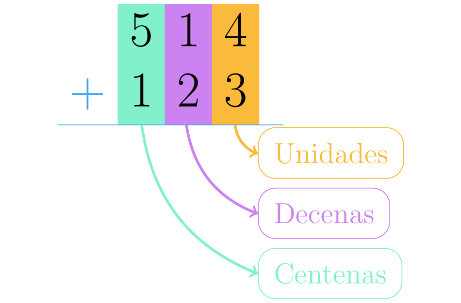

Sumar usando valores posicionales
Sabemos que dependiendo del lugar que ocupen los dígitos en una cifra, podrán representar unidades, decenas, centenas, unidades de mil, etc. De lo que se trata este método es de sumar unidades con unidades, decenas con decenas, centenas con centenas y así sucesivamente. Veamos cómo realizar la siguiente suma: 514 + 123
Paso 1
Primero debemos ubicar los sumandos uno debajo del otro, puedes imaginar líneas verticales que forman casillas.En la primera casilla de derecha a izquierda deben estar las unidades, en la segunda las decenas, en la tercera las centenas y así sucesivamente.
Paso 2
Ahora sumamos los dígitos que están en una misma columna, empezamos por las unidades: 4 + 3 = 7 Ponemos este resultado en la casilla de las unidades de la respuesta, que estará ubicada bajo una línea horizontal.
Paso 3
Seguimos con las decenas:1 + 2 = 3 ubicamos esta suma en el lugar de las decenas de la respuesta.
Paso 4
Finalmente operamos 5 + 1 = 6 poniendo ese números en la casilla reservada para las centenas de la respuesta final.

Por lo tanto, el resultado de la suma es seiscientos treinta y siete:514 + 123 =637
Resta o sustracción de cantidades
Como en el caso de la suma, cuando realizamos restas o sustracciones, es mejor saber qué hacemos para hacerlo bien. Aprende la manera correcta de realizar restas, diferencias o sustracciones a continuación:
Cuando tenemos una cantidad de unidades, y de estas quitamos algunas o todas ellas decimos que restamos o sustraemos. Si te fijas es todo lo contrario a sumar en donde las cantidades de adicionan.
Imagina que tienes 8 dulces, luego te encuentras con un amigo y le compartes 3 ¿Cuántos dulces te quedan después de compartir los tres con tu amigo? Para resolver este tipo de problemas realizamos una resta, diferencia o sustracción. El símbolo que debemos utilizar para representar esta operación es el menos ( - )
De ocho dulces compartes tres.
Podemos representar la situación de los dulces por medio de la operación: 8 - 3 que debe ser leída: “ocho menos tres”. En el problema que estamos tomando como ejemplo se traduce a: ocho dulces que tenías menos tres que regalaste.
Para visualizar lo que ocurre cuando restamos, dibujamos 8 dulces que tenías al principio, después dejamos sin color los dulces que sustrajimos o restamos. El resultado de la resta será el número de dulces que queden con color:
Si de ocho dulces se restan tres, quedan cinco.
Para continuar aprendiendo mas has clik.